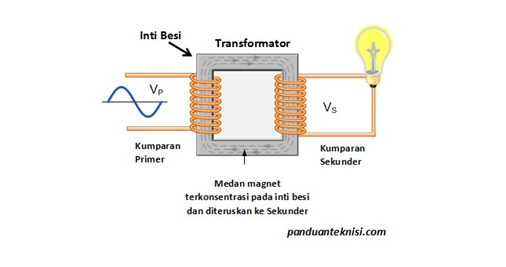

Transformator
Bagian-bagian transformator terdiri atas kumparan primer, kumparan sekunder, dan inti besi lunak. Kumparan primer merupakan bagian transformator yang terhubung dengan sumber tegangan. Inti besi lunak pada transformator berfungsi untuk tempat melingkarnya kumparan primer dan sekunder. Tegangan dan arus keluar dari transformator mengalir dari kumparan sekunder. Agar lebih jelas simak skema transformator dibawah ini.

Tegangan dan jumlah lilitan pada transformator memiliki hubungan kesebandingan yang dapat ditulis sebagai berikut.
$ W_p = W_s$
$ V_p \times I_p \times t = V_s\times I_s \times t$
$ \frac{V_p}{V_s}= \frac{I_s}{I_p}$
maka, $\frac{I_s}{I_p} = \frac{V_p}{V_s}=\frac{N_p}{N_s}$
Keterangan:
$W_p$ = energi primer (J)
$W_s$ = energi sekunder (J)
$I_p$ = arus primer (A)
$I_s$ = arus sekunder (A)
$N_p$ = lilitan primer
$N_s$ = lilitan sekunder
$V_p$ = tegangan primer (V)
$V_s$ = tegangan sekunder (V)
Perhitungan efisiensi trafo (η) yang tidak ideal tersebut dapat dilakukan dengan menggunakan rumus berikut.
η = $\frac{P_{out}}{P_{in}} \times 100%$
η = $\frac{V_s . I_s}{V_p . I_p} \times 100%$
Keterangan :
$P_{out} $ = daya listrik pada kumparan sekunder (W)
$P_{in} $ = daya listrik pada kumparan primer (W)

Contoh (Klik)
Sebuah transformator memiliki 300 lilitan primer dan 30 lilitan sekunder. Diketahui tegangan pada lilitan primer adalah 220 volt.
- Tentukan besar tegangan pada lilitan sekunder.
- Jika arus listrik yang mengalir pada lilitan primer sebesar 0,5 mA, berapakah arus listrik yang mengalir pada lilitan sekunder?
- Tentukan efisiensi transformator.
- Tentukan jenis transformator.
Diketahui:
- $N_p$ = 300 lilitan
- $N_s$ = 30 lilitan
- $V_p$ = 220 volt
- $I_p$ = 0,5 mA
Ditanya:
- Tegangan sekunder (Vs )
- Arus sekunder (Is )
- Efisiensi transformator (η)
- enis transformator
Jawaban
- Tegangan sekunder (Vs )
$ \frac{N_p}{N_s} = \frac{V_p}{V_s}$
$ \frac{300}{30} = \frac{220 V}{V_s}$
$V_s= \frac{220 V \times 30}{300}= \space 22\space Volt$
- Arus sekunder ($I_s$ )
$ \frac{N_p}{N_s} = \frac{I_s}{I_p}$
$ \frac{300}{30} = \frac{I_s}{0,5 \space mA}$
$I_s = \frac{300 \times 0,5 \space mA}{30}= \space 5 \space mA $
- Efisiensi transformator (η)
$ η = \frac {P_{out}}{P_{in}} \times 100 $$\space = \frac{V_s.I_s}{V_p.I_p} \times 100% $$= \frac {5 \space mA \times 22 \space V} {0,5 \space mA \times 220 \space V} \times 100% $
- Jenis transformator
Karena $I_p>V_s> N_p> N_s$ , maka transformator tersebut adalah transformator step-down.
Mari Mencoba
1. Sebuah transformator memiliki 1.500 lilitan primer dan 300 lilitan sekunder. Bila tegangan sekunder transformator tersebut 3 volt dan arus primernya 4 mA, berapakah tegangan primer dan arus sekundernya?
JAWABAN
Jawaban Salah
Sayang sekali. Silahkan pelajari kembali materi di atas dengan penuh semangat.
Jawaban benar
Diketahui:
- $N_p$ = 1500 lilitan
- $N_s$ = 300 lilitan
- $V_s$ = 3 volt
- $I_p$ = 0,5 mA
Ditanya:
- Tegangan primer ($V_p$ )
- Arus sekunder ($I_s$ )
Jawaban
- Tegangan primer ($V_p$ )
$ \frac{N_p}{N_s} = \frac{V_p}{V_s}$
$ \frac{1500}{300} = \frac{V_p}{3}$
$V_s= \frac{1500 V \times 3}{300}= \space 15\space Volt$
- Arus sekunder ($I_s$ )
$ \frac{N_p}{N_s} = \frac{I_s}{I_p}$
$ \frac{1500 v}{300} = \frac{I_s}{4 \space mA}$
$I_s = \frac{1500 v \times 4 \space mA}{300}= \space 20 \space mA $
2. Sebuah transformator step-down terdiri atas kumparan primer dengan 1.200 lilitan dan kumparan sekunder dengan 40 lilitan. Jika kumparan primer dihubungkan degan tegangan sebesar 330 V, berapa tegangan pada kumparan sekunder?
JAWABAN
Jawaban Salah
Sayang sekali. Silahkan pelajari kembali materi di atas dengan penuh semangat.
Jawaban benar
Diketahui:
- $N_p$ = 1200 lilitan
- $N_s$ = 40 lilitan
- $V_p$ = 330 volt
Ditanya:
Tegangan skunder ($V_s$ )
Jawaban
- Tegangan skunder ($V_s$ )
$ \frac{N_p}{N_s} = \frac{V_p}{V_s}$
$ \frac{1200}{40} = \frac{V_s}{330}$
$V_s= \frac{330 V \times 40}{1200}= \space 11\space Volt$
3. Jika daya listrik yang mengalir pada kumparan primer dan sekunder sebuah transformator berturut-turut sebesar 350 watt dan 70 watt, berapakah efisiensi transformator tersebut ?
JAWABAN
Jawaban Salah
Sayang sekali. Silahkan pelajari kembali materi di atas dengan penuh semangat.
Jawaban Benar
Diketahui:
- $P_p$ = 350 watt
- $P_s$ = 70 watt
$η = \frac{P_s }{P_p} \times 100%$
η = \frac{70 }{350} \times 100%$
η = 20%